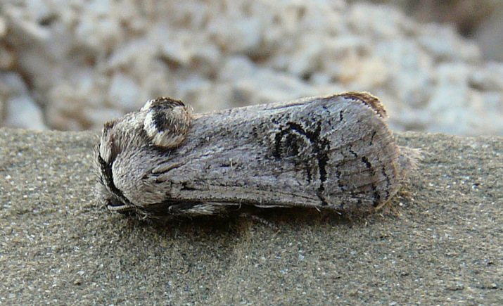
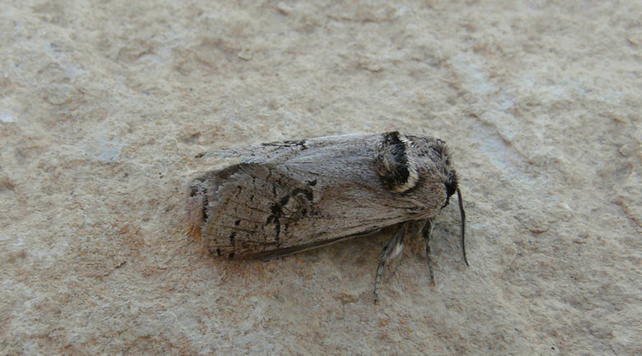

| PHRYGANA | Fauna | Flora | Galles | liste des espèces |
contact -
info - commentaires phrygana1 (at) gmail.com |
| Particularités crétoises | nouveautés | Mines | ressources naturelles |
| Parahypopta caestrum (Hubner 1808) |
| 154 | Fauna | COSSIDAE | Cossinae | Parahypopta Daniel 1961 |
|  Parahypopta caestrum Melambes (Agios Giorgos) 29 mai 2010 |
| le Cossus-touret - Asparagus moth | |
| Envergure entre 30 à 40 mm., la femelle étant légèrement plus grande que le mâle. Ailes gris clair, avec une tache plus sombre dans l'ire postmédiane. Abdomen couvert de poils gris. | |
| Les adultes ne se nourrissent pas. Durée de vie courte. | |
| Larve longue de 40 à 50 mm. Ponte en paquet (30 - 40 oeufs). Eclosion après 2 - 3 semaines. Chenille se développant dans le bas des tiges et dans les racines de la plante. Diapause estivale. | |
| Espèce phytophage: monophage: Asparagaceae (Asparagus aphyllus subsp. orientalis) | |
| Espèce univoltine: période de vol en: avril mai juin | |
| Statut en Crète: indigène | |
| Biotopes en Crète: phrygana, talus, champs abandonnés. | |
| Altitudes: 0 - 1000 m. | |
| Distribution: région Méditerranéenne, Proche-Orient, Iran | |
| Note: vient à la lumière. Activité nocturne | |
|
Parahypopta caestrum Melambes (Agios Giorgos) 29 mai 2010 |
|
 Parahypopta caestrum Melambes (Agios Giorgos) 13 juin 2010 |
|
Parahypopta caestrum Melambes (Agios Giorgos) 02 juin 2013 |
| 10 juin 2013 |
| © paul fontaine -- © Phrygana.eu 2007 -- 2013 |